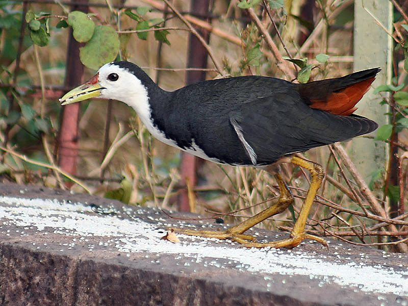

डहुआWhite-breasted Waterhen
Amaurornis phoenicurus · Rallidae · BRD-0039

- Scientific name
- Amaurornis phoenicurus (Pennant, 1769)
- Family
- Rallidae
- Hindi
- डहुआ
- Status here
- native
- IUCN
- LC
When to look कब देखें
Present all year.
डहुआ / White-breasted Waterhen
Amaurornis phoenicurus (Pennant, 1769) — Rallidae
डहुआ (व्हाइट-ब्रेस्टेड वाटरहेन) — पूर्वी उत्तर प्रदेश के तालाबों, सिंचाई नहरों, दलदली खेतों और पानी भरे गड्ढों के किनारे पाया जाने वाला एक अत्यंत आम और शोर मचाने वाला निवासी जलपक्षी है। इसकी सबसे बड़ी पहचान इसका गहरा स्लेटी-काला शरीर, उसके सामने का एकदम सफेद चेहरा, छाती और पेट (clean white face and breast) तथा पूँछ के नीचे का चमकीला जंग जैसा लाल-नारंगी (rufous-orange undertail) भाग है। यह तालाबों के किनारों पर लंबी हरी टाँगों से धीरे-धीरे पैर उठाकर चलता है और अपनी छोटी दुम को झटके से ऊपर-नीचे हिलाता रहता है। मानसून के दौरान, विशेष रूप से शाम के समय, यह घने पत्तों में छिपकर अत्यंत तेज़, धातु जैसी कड़कती हुई आवाज़ें निकालता है, जो गाँवों में मानसून का पर्याय मानी जाती हैं।
Quick Identification त्वरित पहचान
| Feature | Description |
|---|---|
| Size | Medium-sized wader (28–33 cm total length); approximately size of a small domestic hen |
| Colouration | Slate-grey upperparts and wings; starkly contrasting clean white face, throat, and breast |
| Undertail | Diagnostic rusty-red or rufous-orange undertail coverts; tail short and frequently flicked |
| Legs | Long, pale-greenish toes and legs; adapted for walking on muddy pond margins |
| Bill | Short, greenish bill with a bright red spot at the base of the upper mandible during breeding |
| Foraging | Walks at water edges, stepping high; runs rapidly into reedbeds if startled |
Field tip: Look along waterlogged ditches or pond edges at dusk. Watch for a slate-grey bird with a bright white breast walking in the mud. It regularly flicks its short tail upward, showing off a rusty-orange patch underneath.
Morphology आकारिकी
Biometrics (typical measurements in the northern Indian plains):
| Measurement | Range |
|---|---|
| Total length | 280–330 mm |
| Wing (flattened chord) | 150–170 mm |
| Tail | 60–75 mm |
| Tarsus | 52–60 mm |
| Bill (culmen from base) | 35–42 mm |
| Weight | 200–320 g |
Plumage: The upperparts from the crown to the wings and tail are dark slate-grey, often with an olive-green wash on the back. The forehead, cheeks, throat, breast, and middle of the abdomen are pure, clean white. The flanks and lower belly are deep olive-slate. The undertail coverts are bright rufous-cinnamon.
Bare parts: The moderately long, straight bill is greenish-yellow, with the base of the upper mandible turning bright red during the breeding season. The irises are reddish-brown. The long legs and toes are greenish-yellow.
Vocalisations
White-breasted Waterhens are incredibly vocal, especially during the monsoon rains.
- Breeding / Monsoon Call: An explosive, loud, maniacal, and metallic series of grunts, croaks, and chuckles, followed by a rhythmic kruac-kruac-kruac-kruac-oow, which can continue for hours at dawn and dusk.
- Alarm Call: A sharp, dry metallic click: chik-chik-chik, uttered when startled as it runs into cover.
Ecological Role पारिस्थितिक भूमिका
Wetland omnivore and bioindicator.
- Omnivorous cleanup: They consume a wide variety of aquatic insects, worms, snails, and seeds along water margins, helping control pest populations.
- Wetland health indicator: Being sensitive to water pollution and loss of marshy reeds, their presence indicates healthy, vegetated freshwater wetlands.
- Micro-habitat user: They utilize dense marsh vegetation for cover, highlighting the importance of maintaining natural shoreline reeds rather than concretizing pond edges.
Life Cycle / Phenology जीवन चक्र
- Breeding season: June to September, coinciding with the peak of the monsoon rains.
- Nesting: They build a bulky, shallow cup of twigs, dry reeds, and grass.
- Nest site: Placed close to water, hidden in low thorny bushes, tangled creepers, or reedbeds, sometimes a few feet above the water level.
- Clutch size: 4 to 9 cream-white eggs speckled with reddish-brown.
- Incubation: 19–21 days, shared by both parents.
- Fledging: Chicks are nidifugous; they are born covered in jet-black down and leave the nest within hours of hatching. Both parents protect and feed them until they can forage independently in 25–30 days.
Host Plants or Prey आहार
Primary food items:
- Insects: Water beetles, bugs, grasshoppers, flies, and larvae of dragonflies.
- Other invertebrates: Apple snails (Pila globosa), earthworms, and small crabs.
- Vertebrates: Small tadpoles, fingerling fish, and small water snakes.
- Vegetation: Seeds of marsh grasses, shoots of aquatic weeds, and green moss.
Predators / Natural Enemies शत्रु
- Raptors: Bonelli's Eagles and Marsh Harriers target them at pond edges.
- Carnivores: Small Indian Mongooses (Herpestes edwardsii) and feral dogs hunt them in tall grass.
- Reptiles: Bengal Monitors (Varanus bengalensis) and cobras raid nests to consume eggs and chicks.
Agricultural / Human Relevance कृषि प्रासंगिकता
Sanitation ally in paddies. They actively forage in waterlogged paddy fields, consuming crop-damaging insects and snails.
They are highly adapted to human-modified habitats, colonizing roadside ditches and drainage canals. However, their reliance on wetlands makes them vulnerable to habitat destruction when village ponds are filled for construction, or when excessive herbicides are used to clear marsh grasses.
Expected Locally स्थानीय रूप से अपेक्षित
Not a field record. Written from published accounts for eastern Uttar Pradesh. No confirmed local sighting yet — if you have seen it, that is what the atlas needs.
अभी तक स्थानीय पुष्टि नहीं। यह विवरण प्रकाशित स्रोतों से है, किसी अवलोकन से नहीं।
A very common resident along the Saryu river canals and village ponds in Basti. Known locally as "डहुआ" (Dahua). They are frequently seen walking near water margins early in the morning. During hot afternoons, they rest inside dense growth of Besharam (Ipomoea carnea) plants. Their loud monsoon call is a familiar and cherished sound in rural Basti, signalling the arrival of heavy agricultural rains.
Distribution वितरण
Global range: Widespread across the Indian Subcontinent, Southern China, Southeast Asia, and the Philippines.
In India: Widespread in plains and low hills near water.
In Uttar Pradesh: Abundant year-round resident in all districts with wetlands and rivers.
In Basti district / eastern UP: Found near every village pond (talab), drainage ditch, and canal.
Research Questions शोध प्रश्न
Anyone can investigate these | कोई भी इन प्रश्नों की जाँच कर सकता है
- How many seconds does a Waterhen spend in open view before running back into dense reed cover? — Observe and record foraging bout durations.
- Do Waterhens nest more successfully in Besharam thickets compared to native reeds in Basti ponds? — Survey nest site preferences and survival rates.
- What is the diet composition of Basti Waterhens foraging in paddy fields vs. village ponds? — Analyze droppings or record visible feeding strikes.
- How does calling activity change in relation to daily rainfall amounts during the monsoon? / मानसून के दौरान दैनिक वर्षा की मात्रा के संबंध में डहुआ के बोलने की सक्रियता में क्या बदलाव आता है? — Monitor vocal activity.
- Does pond water pollution from village refuse affect the nesting density of Waterhens? / क्या ग्रामीण कचरे से होने वाला तालाब के पानी का प्रदूषण डहुआ के घोंसला बनाने के घनत्व को प्रभावित करता है? — Survey nest counts in clean vs. polluted ponds.
Similar Species मिलती-जुलती प्रजातियाँ
| Species | Key Difference | हिंदी |
|---|---|---|
| Common Moorhen (Gallinula chloropus) | Dark slaty-black body; lacks white face and breast; bright red frontal shield on head; swims actively | जलमुर्गी — पूरा काला शरीर, सिर पर लाल ढाल |
| White-breasted Crake (Porzana fusca) | Much smaller (20 cm); rufous-chestnut breast and face; olive-brown back; rare and shy | रुडी क्रेक — छोटा आकार, लाल-भूरा छाती |
| [BRD-0029 Cattle Egret] (Bubulcus ibis) | Entirely white; long yellow bill; long neck; lives on dry land near cattle; no slate-grey upperparts | गाय बगुला — पूरा सफेद शरीर, पीली चोंच |
Field rule: Dark slate-grey upperparts, starkly contrasting clean white face and breast, long greenish legs, and a bright rufous-orange undertail patch identify the White-breasted Waterhen.
Taxonomy & Classification वर्गीकरण
Original description. Thomas Pennant described the White-breasted Waterhen as Gallinula phoenicurus in 1769 in his work Indian Zoology (p. 10, Plate 9). The type locality was Ceylon. The genus name Amaurornis was introduced by Reichenbach in 1853, derived from the Greek amauros (dark or obscure) and ornis (bird). The specific name phoenicurus is derived from the Greek phoinix (crimson/red) and ouros (tailed), referencing the rusty-red undertail coverts.
Subspecies. Three subspecies are recognized. The nominate subspecies resident in the Indian Subcontinent is:
| Subspecies | Authority | Range | Notes |
|---|---|---|---|
| A. p. phoenicurus | (Pennant, 1769) | South Asia, Western Myanmar, Maldives | UP subspecies; nominate form; characters match the stark white breast and slate-grey back |
Family and order placement. Placed in the order Gruiformes, family Rallidae (rails, crakes, and coots).
Phylogenetic notes. Amaurornis phoenicurus belongs to a distinct Old World lineage of rails that are highly adapted to marshy banks rather than swimming.
IUCN status rationale. Listed as Least Concern (LC) due to its massive distribution range, highly stable populations, and success in colonizing artificial agricultural ditches.
Photo Gallery फोटो गैलरी
References संदर्भ
- Pennant, T. (1769). Indian Zoology. London, p. 10, Plate 9. [original description]
- Ali, S. & Ripley, S. D. (1999). Handbook of the Birds of India and Pakistan. Vol. 8. Oxford University Press, New Delhi.
- Grimmett, R., Inskipp, C. & Inskipp, T. (2011). Birds of the Indian Subcontinent. 2nd ed. Christopher Helm, London.
- Taylor, B. & van Perlo, G. (1998). Rails: A Guide to the Rails, Coots, Gallinules and Crakes of the World. Yale University Press, New Haven.
- BirdLife International (2024). Amaurornis phoenicurus. IUCN Red List of Threatened Species. Ver. 2024.
- GBIF Occurrence Data — Amaurornis phoenicurus, Uttar Pradesh (2010–2025).
Source file: species/fauna/birds/white_breasted_waterhen.md